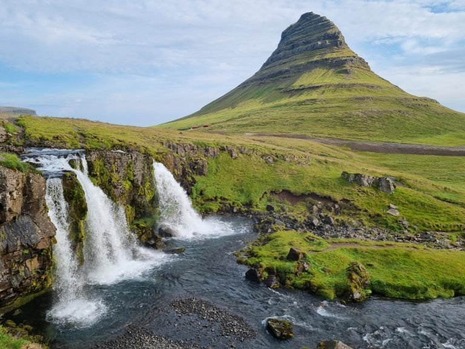

Lago Myvatn
La zona del lago Myvatn y sus alrededores representa el lado más aventurero de Islandia, con volcanes activos, amenazantes cráteres y áreas geotérmicas que podría ser el escenario para una película sobre Marte.
Parajes inhóspitos y seductores al mismo tiempo, donde se puede pasear entre campos de lava como el de Dimmuborgir, ver el cráter Viti o relajarse en las aguas termales de Myvatn Baths, la alternativa barata a la Blue Lagoon.
Los más intrépidos se podrán hacer una excursión hasta el volcán Askja, uno de los más alucinantes de Islandia.

Península de Snaefellsnes
Se suele decir que la Península de Snaefellsnes es como una Islandia en miniatura, ya que se pueden encontrar una muestra de todas las maravillas naturales de la isla. Quizás suene exagerado, pero es cierto que cuenta con escenarios de película con cascadas, volcanes, playas y acantilados que cortan la respiración.
También es una zona fantástica para admirar la fauna local como ballenas, focas e incluso (si tenéis suerte) podéis ver orcas en libertad.

Frailecillos de Dyrhólaey
Este entrañable pájaro a medio camino entre un pingüino y un loro es el animal nacional de Islandia. Habitan los acantilados, creando colonias bastante grandes, pero no son fáciles de avistar. El lugar más accesible para poder verlos es en Dyrhólaey, cerca de Vik
Allí anidan miles de aves marinas y en verano tenéis bastantes probabilidades de verlos, ya que es la época de apareamiento. Si os queréis asegurar ver los frailecillos, podéis reservar una excursión desde Grundarfjörður o la isla de frailecillos de Husavik.

Contemplar focas
Otro de los animales más atractivos de ver en Islandia son las focas. Hay dos lugares que os prometo que las podréis ver con seguridad, ya que acoge dos grandes colonias. Uno es Illugastadir, en la península de Vastsnes. Hay una pequeña isla paralela a la costa con un buen puñado de focas.
El otro lugar es Ytri Tunga, en la Península de Snaefellsnes. Aquí se pueden ver a realmente pocos metros, aunque hay menos ejemplares.

Cañón Stuðlagil
¿Te imaginas un cañón con aguas de color verde esmeralda y gigantescas columnas de basalto? Islandia no deja de sorprender con nuevos paisajes y joyas de naturaleza, en ocasiones vírgenes y desconocidos. Es lo que ocurrió con el cañón Stuðlagil, descubierto por puro azar en 2006 al realizar obras para una presa fluvial.
Haz un hueco en tu itinerario para hacer una ruta andando por los alrededores de este mágico lugar. Sin duda, una de las rutas de senderismo más bonitas de Islandia.